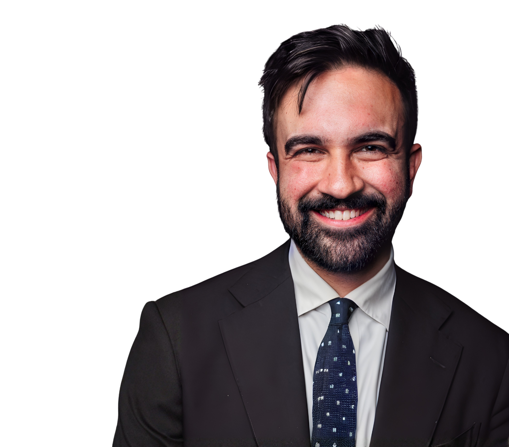
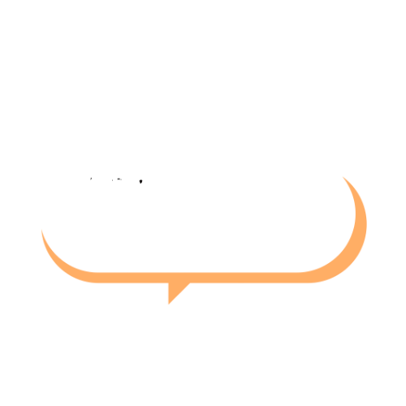
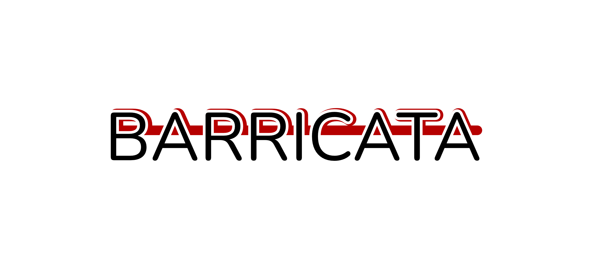

Circolo Caldara · Milano
Sala el Salvadanée – Via De Amicis 17
con Luciana Grosso, Sandro Brusco, Lorenzo Pacini, Francesca Cucchiara
La registrazione
Qui il video della serata del 18 marzo dedicata a Zohran Kwame Mamdani e Milano, con Luciana Grosso, Sandro Brusco, Lorenzo Pacini e Francesca Cucchiara. Tanti ospiti e, a sorpresa, anche l'intervento di Anthony Di Mieri, filmmaker e cofondatore di Melted Solids – il team che ha curato la comunicazione video e costruito il linguaggio visivo della campagna di Mamdani.
Problemi con la riproduzione? Apri la registrazione su Google Drive ↗
Cosa è emerso
La serata dell'18 marzo ha riunito al Circolo Caldara quattro voci diverse per ragionare attorno a una domanda comune: cosa ci insegna l'elezione di Zohran Mamdani, e cosa di quell'esperienza può valere per Milano?
Il filo storico — Danilo Aprigliano
Aprigliano ha aperto la serata con un salto nel passato, tornando al giugno del 1914, quando Emilio Caldara veniva eletto primo sindaco socialista di Milano. Riformista concreto – prezzi calmierati, municipalizzazione dei tram, allargamento della partecipazione popolare – Caldara operò in un momento in cui "il vecchio mondo collassava": la crisi di luglio era a pochi passi. Il parallelo con Mamdani è immediato: anche lui riformista pragmatico, eletto in un momento di crisi sistemica, capace di portare alle urne chi non aveva mai votato. Un secondo salto porta al 1926: l'anno della morte di Piero Gobetti e di Eugene Debs, dell'esilio di Filippo Turati e Carlo Rosselli. Un memento sulla fragilità di ogni conquista riformista, e sulla necessità di quella tradizione.
Luciana Grosso — La forza sta per strada
L'autrice del primo libro italiano su Mamdani ha descritto i suoi primi due mesi di mandato come "nella norma", tra narrazioni mediatiche oscillanti tra trionfo e catastrofe. Alcune azioni concrete sono già visibili: 35 dollari l'ora per spalare la neve durante una grande nevicata, l'accordo per avviare il piano per l'asilo gratuito. Ma per Grosso la vera lezione della vittoria non sta nella comunicazione social – per quanto geniale – bensì nella strategia "novecentesca": centinaia di migliaia di volontari a fare canvassing fisico, bussare alle porte, stare per strada. Il risultato è un'affluenza del 43,47 per cento, la più alta a New York dalle elezioni del 1993, con un aumento del 20 per cento rispetto al turno precedente, trainato soprattutto dai giovani.
Sandro Brusco — Prudenza e lezione comunicativa
Il professore di Economia alla Stony Brook University, collegato in diretta da New York, ha offerto lo sguardo più critico. Ha ricordato che Mamdani non è il primo sindaco progressista della città (de Blasio, Dinkins) e ha espresso scetticismo sulle politiche abitative: gli housing projects americani hanno avuto in media risultati deludenti, e il controllo degli affitti è storicamente associato a una riduzione degli investimenti nell'edilizia. Ha però riconosciuto che la vera novità è altrove: nella qualità comunicativa eccezionale di Mamdani e nel pragmatismo con cui si è mosso anche nei confronti di Trump, cercando un "occhio di riguardo" per la propria città – un tratto che lo distingue dall'ala più massimalista del Partito democratico. Dubbi restano sulla replicabilità fuori da New York, soprattutto nel Midwest, dove la classe operaia bianca è determinante e le stesse qualità comunicative rischiano di produrre l'effetto opposto.
Francesca Cucchiara — Idee, non geometrie
La consigliera di Europa Verde ha colto in Mamdani una qualità rara a sinistra: il coraggio di mettere al centro una visione senza timori di essere etichettata come radicale. Ha criticato la tendenza, tipica del centrosinistra italiano, a ragionare di "geometrie politiche" e tattiche invece di idee e progetti – perché "le idee sono ciò che scalda davvero il cuore alle persone". Ha indicato nel proletariato urbano straniero di Milano, la vera working class della città, un interlocutore con cui la sinistra fatica ancora a dialogare, e in Mamdani un modello di come si costruisca un senso di comunità anche con chi si sente escluso dalla politica. Ha insistito sulla necessità di difendere la "regia pubblica" dei beni comuni: dalla casa alle piscine, il mercato non può essere lasciato libero di appropriarsi di ciò che appartiene a tutti.
Lorenzo Pacini — La formula CCCP
L'assessore del Municipio 1 ha messo in guardia dall'importazione acritica di modelli extracontinentali e ha proposto una ricetta in quattro punti che ha battezzato CCCP: Credibilità del messaggio e di chi lo porta, Coerenza tra campagna e governo, Coraggio di battersi anche contro le istituzioni superiori, Politica – il rifiuto dell'idea della città come azienda e del sindaco come manager. Ha portato un esempio concreto: una campagna per aumentare gli abbonati Atm e ridurre il costo del trasporto pubblico, che unisce concretezza, visione e coinvolgimento dei cittadini non solo al momento del voto, ma anche in quello decisionale.
Il filo di Milano
La serata si è chiusa con uno sguardo al presente milanese. Il percorso Hey Milano – cento assemblee nei quartieri della città – e il Congresso della Città di maggio 2026 si ispirano allo stesso principio che ha guidato la vittoria di Mamdani: andare dove si trovano le persone, ascoltarle, costruire insieme. Come ha ricordato Aprigliano, la rete di attivisti che ha portato Mamdani alla vittoria non è nata nell'estate del 2025: ha radici in dieci anni di lavoro, da Bernie Sanders ad Alexandria Ocasio-Cortez. La partecipazione non si improvvisa. Si coltiva.
Perché questo evento
Effetto Mamdani nasce dentro il percorso di Hey Milano, un'iniziativa civica e partecipativa promossa dal Circolo Centro Studi Emilio Caldara con il principio dei contenuti prima dei nomi, domande prima delle candidature.
Nella prima fase – "Come stai?" – abbiamo organizzato dieci incontri pubblici per ascoltare i milanesi su come è cambiata Milano. Nella seconda fase – "Dove andiamo?" – sono in corso circa cento assemblee diffuse nei quartieri, che culmineranno nel Congresso per la Città nel maggio 2026.
In questo contesto, Effetto Mamdani si propone di allargare lo sguardo oltre i confini cittadini, esplorando temi di partecipazione, giustizia sociale e governo delle grandi metropoli. Questa serata si collega anche allo spirito di Barricata, rivista di cultura politica.
L'elezione di Zohran Mamdani a sindaco di New York – il primo candidato socialista a vincere in una grande città americana – offre uno straordinario punto di osservazione per chi si interroga sul futuro della sinistra urbana, in Italia e nel mondo.
Ne hanno parlato
Luciana Grosso
Giornalista, autrice e podcaster. Collabora con Chora Media, ISPI e Il Foglio. È autrice di Mamdani. Un socialista a New York (Castelvecchi, 2024), il primo libro in italiano dedicato alla sua candidatura alle primarie democratiche di New York. Conduce il podcast La Spada nella Roccia.
Sandro Brusco
Professore ordinario di Economia alla Stony Brook University di New York. Intervenuto in collegamento diretto dagli Stati Uniti. Dottore di ricerca in Economia alla Stanford University. I suoi interessi scientifici includono economia politica, teoria dei giochi e teoria dell'organizzazione. Cofondatore di Noise from Amerika, blog di economia e politica americana tra i più letti in Italia.
Lorenzo Pacini
Nato a Milano nel 1996. Assessore del Municipio 1 di Milano con deleghe a Verde, Arredo Urbano, Casa e Politiche Giovanili. Eletto nel 2021 con 804 preferenze in lista con Milano 2030. Voce della sinistra municipale milanese sui temi del diritto alla città e della partecipazione civica dei giovani.
Francesca Cucchiara
Consigliera comunale di Milano eletta con Europa Verde. Dottore di ricerca in Sustainable Development and Climate Change. Co-portavoce di Europa Verde Milano da novembre 2025. Impegnata nelle politiche climatiche urbane e nella giustizia ambientale come strumenti di trasformazione della città.
Modera
Giacomo D'Alfonso
Analista di intelligence e osservatore di geopolitica. Scrive per Gli Stati Generali e Agenda Digitale. Pubblica la newsletter È un momentaccio. Membro attivo del Circolo Caldara.
Introduce
Danilo Aprigliano
Insegnante di Lettere e filologo romanzo, dottore di ricerca e master in Public History. Si occupa di public history con l'Università degli Studi di Milano e la Fondazione Feltrinelli, e di formazione docenti sull'intelligenza artificiale. Promotore di Hey Milano presso il Circolo Caldara.
Dove si è tenuta
Mercoledì 18 marzo 2026
ore 18:15
Ingresso libero, senza prenotazione
Circolo Caldara
Sala el Salvadanée
Via De Amicis 17 – Milano
Apri in Google Maps ↗
·
Indicazioni ↗